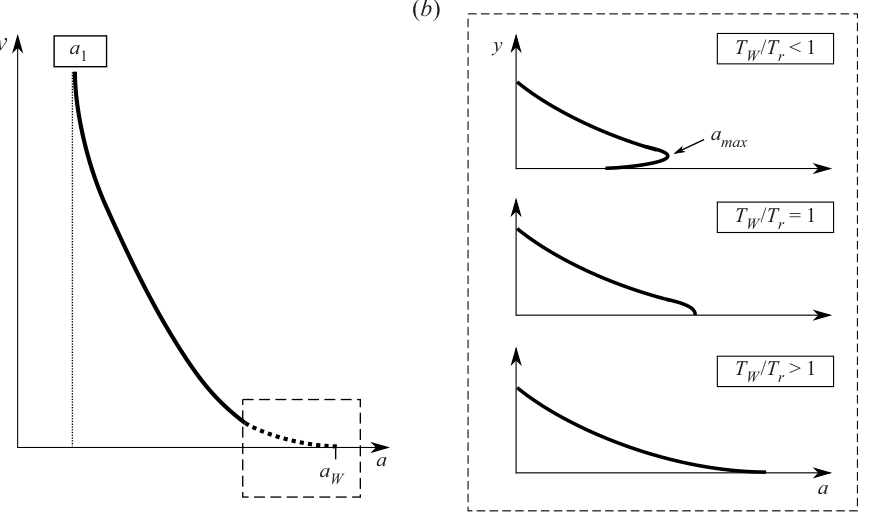
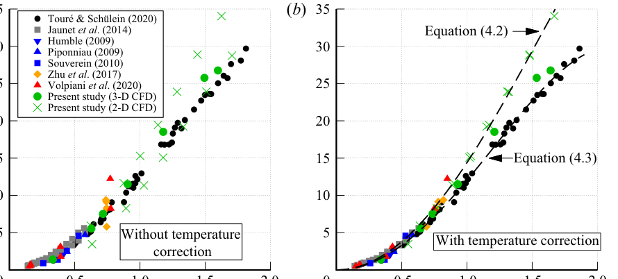
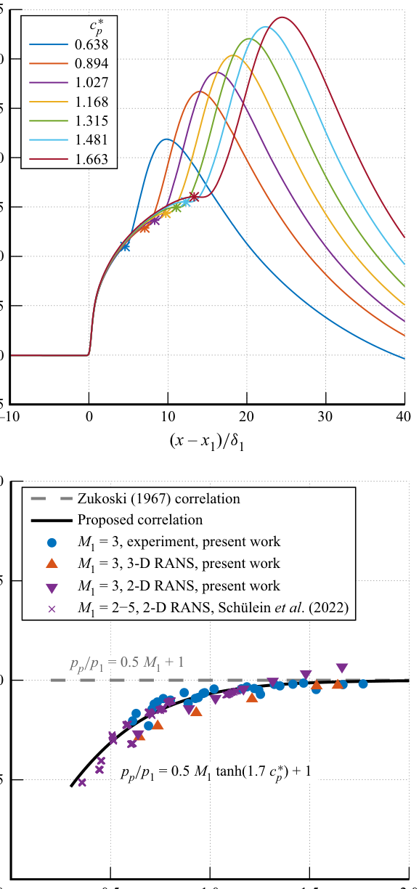
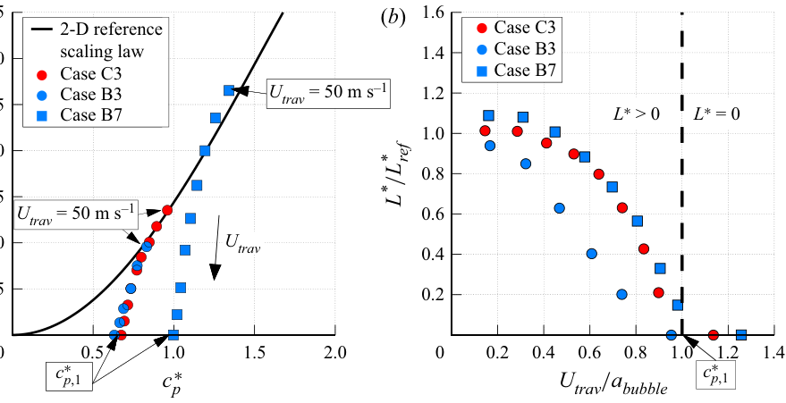

01中文摘要
数值研究均匀运动入射激波对激波/湍流边界层干扰的影响。平板模型上方激波前缘相对马赫数在0–2.3之间变化，准定常来流马赫数保持3。为定量评价激波传播速度效应，采用改进的准定常干扰长度标度方法作为参考，改进包括对雷诺数和壁温效应的新建模，并用已有实验数据验证。按传播速度划分三个区间：第一区间标度干扰长度达到给定干扰强度下的最大值，可直接用准定常标度描述；第二区间干扰长度随速度增加迅速减小，终点为激波前缘速度赶上干扰区最大声速、干扰长度降为零；第三区间上游影响不再可能。
原始摘要（英文/原文）
In the present study, the influence of a uniformly moving impinging shock on the resulting shock wave–turbulent boundary layer interaction is numerically investigated. The relative Mach number of the shock front travelling above a flat-plate model varied between 0 and 2.3, while the quasi-steady inflow conditions remained constant with a Mach number of 3. To quantitatively evaluate the effect of shock travelling speed, a well-known scaling method for interaction length in quasi-steady flows was applied as a reference after significant improvements in modelling the effects of Reynolds number and wall temperature using new and existing data. Moreover, previously obtained experimental results for a limited range of travelling speeds were employed to validate the obtained numerical results. Three ranges of shock travelling speeds with distinctly different properties were extracted and quantitatively described using a developed correlation-based approach built on the extended quasi-stationary scaling law. In the first range, the scaled interaction length reaches its maximum for the given interaction strength and can be directly described by the scaling law obtained for quasi-stationary interactions. In the second travelling-speed range, the dependence of the interaction length on the interaction strength is explicitly influenced by the shock movement. With increasing shock travelling speed, the scaled interaction length here decreases significantly faster than in the quasi-stationary reference case. The end of this speed range is reached when the absolute shock front speed has caught up with the maximum speed of sound in the interaction zone, and thus the interaction length has fallen to zero. This travelling-speed limit signifies the transition to the third range, where upstream influence is no longer possible.
02阅读说明
bundle 共 2159 行，分三段（1–760、760–1509、1509–2159）完整读取至文件末尾；公式 (2.1)(2.2)(4.4) 核对原 PDF 第 10、23 页，图 19 核对第 24 页（共 3 页，未超 6 页上限）。图件清单 16 项，正文中的图 26、27 未被抓取，故未用作 figures。全文仅取 bundle 文本、图注和表格，未引入外部知识。 文章类型：期刊
03一句话核心与三句话摘要
M=3 RANS 研究给出运动激波干扰长度三段式标度律与平台压力新关联。
- 用 DLR-TAU RANS 在 M∞≈3 下模拟相对激波马赫数 0–2.3 的匀速运动入射激波与湍流边界层干扰，并用 90 m/s 以内的实验数据校核。 原文明确
- 通过 Reδ 与 Tw/Tr 修正相互作用强度 c*p，建立准定常干扰长度与平台压力的统一标度：L*=15.46c*p²−1.07c*p⁴，pp/p1=1+0.5M1 tanh(1.7c*p)。 原文明确
- 随激波运动速度增大依次出现准定常、压缩、无上游影响三个区间，用 Elfstrom 阈值归一化的 c~p 可把 L*/L*ref 从 1 到 0 的演化统一描述。 原文明确
04核心内容清单
| 要点 | 类型 | 重要性 | 原文依据 | 属性 |
|---|---|---|---|---|
| 研究对象为 M∞=3.04、Re1=46×10^6 m⁻¹ 的平板湍流边界层，入射激波以恒定 Utrav=0–450 m/s 运动，真实激波马赫数 Ms=(Utrav+U∞)/a∞ 覆盖 0–2.3。 | 研究条件 | A | 第 1 页（A28-1）；第 9 页表 1；第 4–5 页图 1、2 | 原文明确 |
| 在 Souverein 标度基础上引入 Reδ 修正 K1=(Reδ/2×10^5)^(−0.27cp^1.41)，使准定常实验数据的 L*–c*p 关系显著收紧；该式仅在 Reδ≳10^5 可靠。 | 标度方法 | A | 第 10 页（A28-10），式 (2.1)(2.2)，图 8 | 原文明确 |
| 再引入壁温修正 K2=(Tw/Tr)^0.15（n=0.15），式 (4.1) 可消除不同 Tw/Tr 数据的层叠，把 M1=2.1–5、Tw/Tr=0.4–1.9 的数据合并到同一 L*–c*p 曲线。 | 标度方法 | A | 第 21–22 页（A28-21–22），式 (4.1)，图 18 | 原文明确 |
| 二维与三维参考标度分别为 L*=15.46c*p²−1.07c*p⁴ 与 L*=13.56c*p²−1.54c*p⁴（均 R²=0.99）；二维模拟的 L* 随 c*p 增长快于实验，归因于二维/三维分离泡拓扑差异。 | 定量关系 | A | 第 22 页（A28-22），式 (4.2)(4.3) | 原文明确 |
| 平台压力新关联 pp/p1=1+0.5M1 tanh(1.7c*p) 统一描述 M1、Reδ、Tw/Tr 与干扰强度的影响，强干扰时退化为 Zukoski 公式 pp/p1=1+0.5M1。 | 定量关系 | A | 第 23–25 页（A28-23–25），式 (4.6)，图 19 | 原文明确 |
| 三维 RANS 对干扰长度平均高估 7.5%（A3 10%/2.8 mm，A6 6%/3.1 mm），平台压力略低估；整体精度被认为可接受并用于后续标度验证。 | 数值验证 | A | 第 19 页（A28-19），图 16；第 22–23 页 | 原文明确 |
| 运动激波使分离泡缩短、泡内最高温度升高；Tmax,bubble/Tw 在 Utrav=250 m/s 达 2.96，约 300 m/s 后反转，且 Tmax,bubble/Tw=1.06(Tw/Tr,s)^−0.77（±3.8%，仅分离流）。 | 主要结果 | A | 第 27–28 页（A28-27–28），式 (4.7)(4.8)，图 22、23 | 原文明确 |
| 以 ξvisc/ξelf≈1.25±0.05 为临界：高于该值准定常标度仍可描述干扰长度，低于该值干扰区被压缩，L*/L*ref 随速度迅速下降。 | 分区判据 | A | 第 31–32 页（A28-31–32），表 9，图 26 | 原文明确 |
| 用 c~p=(c*p−c*p,1)/(c*p,2−c*p,1) 归一后，所有速度、壁温与强度数据落在 L*/L*ref=−0.963c~p²+1.963c~p 上，实现从准定常到无分离的统一描述。 | 核心标度 | A | 第 32–33 页（A28-32–33），式 (4.9)(4.10)，图 27 | 原文明确 |
| 提出三段速度区间：区间 1 准定常（c~p≥1）；区间 2 压缩（0<c~p<1），声速线加速移向壁面；区间 3 无上游影响（c~p≤0），激波直达壁面、L=0。 | 核心结论 | A | 第 33–35 页（A28-33–35），第 5 节结论 (iii) | 原文明确 |
| 准定常临界速度依赖初始条件：B7、C3 为 200–250 m/s，B3 仅 50–100 m/s；说明 c*p,2 与分离泡的“历史”有关。 | 结果与解释 | B | 第 29–30 页（A28-29–30），图 24 | 原文明确 |
| 三维定常分离泡内存在由对称轴向外的横向二次流（有限展长激波发生器所致），这是二维模拟高估 L* 增长及三维/二维平台压力差异的物理原因之一。 | 流动机理 | B | 第 18 页（A28-18），图 15；第 22 页 | AI概括 |
05引言：研究问题与领域缺口
指出 SWTBLI 本身非定常，实际飞行器操纵面/控制襟翼还会叠加激波强迫运动；已有研究分三类：(i) 外强迫振荡激波与定常边界层干扰，(ii) 运动激波扫过热层，(iii) 运动正激波与激波管壁面边界层干扰。作者评述 (i) 类实验难以保持激波强度和速度恒定，(ii)(iii) 类可在随激波运动坐标系中作准定常处理。已有 Elfstrom 判据、Mark 判据和作者 2020 年实验（最高 90 m/s，约 0.15U∞）均未能回答“准定常标度在何种速度失效”。本文用数值方法把相对激波马赫数扩展到 2.3，目标是建立可预测运动 SWTBLI 干扰长度的物理模型，并给出平台压力的新标度（第 1–8 页，A28-1–A28-8）。
06流动条件与几何构型
| 项目 | 数值/描述 | 依据 | 备注 |
|---|---|---|---|
| 名义风洞来流 | M∞=3.04，P0=0.502 MPa，T0=255 K，Tw=290 K，Re1=46×10^6 m⁻¹，U∞=577 m/s，ρ∞=0.5 kg/m³，Tw/Tr=1.2 | 第 9 页（A28-9），表 1 | |
| 实验激波运动范围 | 最高约 90 m/s（≈0.15U∞）；试验相约 0.5 ms，行程约 45 mm；加速瞬态约 0.7 ms | 第 8 页（A28-8）；第 11 页（A28-11） | 实验仅覆盖区间 1 的低速端 |
| 三维定常 A 组（7 例，A1–A7） | ξimp=1.821–3.806；cp=0.333–1.573；d=5–30 mm；y=80–100 mm；Tw/Tr=1.2；δ=3.7–4.7 mm；δ*=1.3–1.6 mm；ximp=274.9–358.9 mm；βimp=25.8°–38.0°；c*p=0.341–1.641；L=11.1–57.0 mm；L*=1.39–26.76 | 第 16 页（A28-16），表 5 | 逐例参数见 Table 5，未合并不同强度工况 |
| 二维定常 B 组（7 例，B1–B7，冷壁） | Tw/Tr=0.4；ξimp=2.364–3.760；cp=0.615–1.536；δ=3.5 mm；δ*=1.1 mm；c*p=0.554–1.492；L=10.9–46.3 mm；L*=3.46–28.76 | 第 17 页（A28-17），表 6 | |
| 二维定常 C 组（7 例，C1–C7，热壁） | Tw/Tr=1.2；ξimp=2.364–3.760；cp=0.615–1.536；δ=3.9 mm；δ*=1.4 mm；c*p=0.638–1.663；L=23.0–67.0 mm；L*=5.94–34.05 | 第 17 页（A28-17），表 6 | |
| 二维非定常算例 B3 | Utrav=50、100、150、200、250、300 m/s 共 6 个速度；d=16 mm；Tw=96 K；ξimp,s=3.16–4.08；Tw/Tr,s=0.35→0.22；c*p,s=0.927–0.766 | 第 26 页（A28-26），表 8 | 每个速度均从已发展的定常解出发 |
| 二维非定常算例 B7 | Utrav=50–450 m/s 共 9 个速度；d=24 mm；Tw=96 K；ξimp,s=4.03–6.61；Tw/Tr,s=0.35→0.17；c*p,s=1.431–1.213 | 第 26 页（A28-26），表 8 | |
| 二维非定常算例 C3 | Utrav=50–450 m/s 共 9 个速度；d=16 mm；ξimp,s=3.16–4.74；Tw/Tr,s=1.05→0.51；c*p,s=0.927–0.734 | 第 26 页（A28-26），表 8 | |
| 运动激波入射位置 | ximp,s=291.6±1.2 mm | 第 25 页（A28-25） | 图 21、24 图注给 291.05±0.35 mm，与正文略有差异；受限于材料，无法确认统一值 |
| 计算域与边界条件 | Lx=770 mm、Ly=500 mm、Lz=250 mm；半模型 z=0 对称面；平板全展长，激波发生器半宽 122.5 mm（全宽 245 mm）；超声速入口/出口；风洞壁为 Euler 壁，模型表面为黏性壁 | 第 12–13 页（A28-12–13），图 10 | |
| 网格 | Grid 1：38.8×10^6 点，y+<0.1；Grid 2：37.8×10^6，y+<1；Grid 3：41.5×10^6（自适应）；Grid 4：54.4×10^6（x 加倍）；Grid 5：63.5×10^6（z 加倍） | 第 13 页（A28-13），表 2、图 11 | |
| 时间步 | Δt=120/60/40/30 ns，对应 Δx=36/18/12/9 µm；采用 Δt=40 ns、Δx=12 µm；每步 600 次内迭代 | 第 15 页（A28-15），表 4、图 12 | |
| 非定常启动方式 | 从定常分离解出发，按 50 m/s 阶梯加速，每级稳定 25 个时间步；450 m/s 时瞬态行程约 4.3 mm，瞬态占总时长 <2% | 第 14–15 页（A28-14–15） | |
| 三维非定常可行性 | 每个激波速度约需 3.2 mio CPUh，未进行 | 第 12 页（A28-12） |
07核心现象与关键参数
| 参数 | 定义 | 数值 | 关系/说明 | 依据 |
|---|---|---|---|---|
| Ms | 真实激波前沿马赫数（随动坐标系） | 0–2.3 | Ms=(Utrav+U∞)/a∞ | 第 1 页（A28-1）；第 4 页（A28-4） |
| Utrav | 入射激波在实验室系的匀速运动速度 | 0–450 m/s（实验 ≤90 m/s） | 第 11 页（A28-11）；表 8（A28-26） | |
| cp | 累积压力系数（干扰强度） | 0.333–1.573（A 组）；0.615–1.536（B/C 组） | cp=((pout/pin)−1)/(0.5γMin²) | 第 9 页（A28-9）；表 5、6 |
| c*p | 考虑 Reδ 与 Tw/Tr 修正后的无量纲干扰强度 | 0.341–1.641（A 组）；0.554–1.663（B/C 组） | c*p=K1K2cp | 第 10 页（A28-10）式 (2.1)；第 21 页式 (4.1) |
| K1 | 雷诺数修正因子 | 由 Reδ 与 cp 决定 | K1=(Reδ/(2×10^5))^(−0.27cp^1.41) | 第 10 页（A28-10），式 (2.1) |
| K2 | 壁温修正因子 | n=0.15 | K2=(Tw/Tr)^n | 第 21 页（A28-21），式 (4.1) |
| L* | 按位移厚度和激波几何角归一化的干扰长度 | 1.39–26.76（A 组）；3.46–34.05（B/C 组） | L*=(L/δ*)·sinβ sinφ/sin(β−φ) | 第 10 页（A28-10），式 (2.2) |
| pp/p1 | 平台压力比（分离激波累积强度） | 数值范围未给单一值；可由图 19 读取约 1–4 | pp/p1=1+0.5M1 tanh(1.7c*p) | 第 23–25 页（A28-23–25），式 (4.6) |
| c~p | 以两个临界强度归一化的干扰强度 | 随 Utrav 由 >1 降至 0 | c~p=(c*p−c*p,1)/(c*p,2−c*p,1) | 第 32 页（A28-32），式 (4.9) |
| ξimp | 无平板时虚拟入射点的无黏压比 | 1.821–3.806（A 组）；2.364–3.760（B/C 组） | ξimp=p2/p1 | 第 16 页（A28-16）；表 5、6 |
| ξvisc | 壁面黏性干扰产生的压升比 | 各速度由壁面压力分布确定 | ξvisc=pmax/p1 | 第 31 页（A28-31） |
| ξelf | Elfstrom 判据给出的最大无分离压升比 | B7：3.33→26.83；C3：2.10→15.00（Utrav=0→450 m/s） | ξelf=pelf/p1，函数 Mslip | 第 31 页（A28-31），表 9 |
| 临界压升比 | 区分准定常与压缩区的判据 | ξvisc/ξelf≈1.25±0.05 | 第 32 页（A28-32） | |
| Mslip | Elfstrom 外推得到的壁面有效马赫数 | B7：1.84→3.79；C3：1.52→3.10（Utrav=0→450 m/s） | 第 31 页（A28-31），表 9、图 25 | |
| abubble | 分离泡内最大声速；Utrav=abubble 定义 c*p,1 | 随 Utrav 变化，文未给单一值 | 第 30 页（A28-30） | |
| Reδ | 以边界层厚度为参考的雷诺数 | 数据集 0.36–2.6×10^5；式 (2.1) 适用 Reδ≳10^5 | 第 10 页（A28-10）；第 21 页表 7 | |
| Tw/Tr | 壁温与恢复温度之比 | 0.4（B 组）、1.2（A/C 组）；文献数据 0.6–2.0 | 第 17 页表 6；第 21 页表 7 | |
| r | 恢复因子 | 文中未提及具体数值 | Tr,s=T∞[1+r(γ−1)Ms²/2] | 第 27 页（A28-27），式 (4.7) |
| Tmax,bubble/Tw | 分离泡内最高静温与壁温之比 | 最大 2.96（Utrav=250 m/s）；关系式精度 ±3.8% | Tmax,bubble/Tw=1.06(Tw/Tr,s)^−0.77 | 第 27–28 页（A28-27–28），式 (4.8) |
| 干扰长度高估量 | 三维 RANS 相对实验的 L 偏差 | 平均 +7.5%；A3 +10%（2.8 mm）、A6 +6%（3.1 mm） | 第 19 页（A28-19） |
08方法与数据
数值：DLR-TAU 三维可压缩有限体积、混合网格、后向 Euler 隐式松弛，Menter-SST 湍流模型，AUSMDV 通量分裂；另用 EARSM 作模型比较。算例：7 个定常三维 RANS（表 5，ξimp=1.821–3.806，Tw/Tr=1.2）用于实验校核；14 个定常二维 RANS（表 6，B 组 Tw/Tr=0.4、C 组 1.2）作参考；3 个二维非定常算例 B3、B7、C3，共 24 个运动速度（表 8，Utrav=50–450 m/s）。三维非定常因每个速度约需 3.2 mio CPUh 而未做。网格：Grid 1–5，38.8–63.5 百万点，Grid 1 的 y+<0.1；Grid 2 使 Lsep 变化 −4.5%，Grid 5 使 q̇max 变化 3.3%，故选 Grid 1 量级。时间步：120/60/40/30 ns，对应 Δx=36/18/12/9 µm，选用 40 ns（Δx=12 µm），每步 600 次内迭代。非定常计算从已充分发展的定常分离流出发，以 50 m/s 阶梯加速到目标速度，每级稳定 25 步，450 m/s 时瞬态行程约 4.3 mm，瞬态时长小于总模拟时间的 2%。实验部分为作者 2020 年 DLR Göttingen RWG Ludwieg 管 M=3 实验，平板+可更换/可运动圆柱激波发生器，高速阴影测干扰长度、油膜干涉测壁面摩阻（第 8–16 页，A28-8–A28-16）。
| 项目 | 内容 | 依据 | 备注 |
|---|---|---|---|
| 求解器 | DLR-TAU 三维可压缩有限体积，混合网格；后向 Euler 隐式松弛 | 第 12 页（A28-12） | |
| 湍流模型 | Menter-SST 为主；EARSM 用于模型比较 | 第 12 页（A28-12） | |
| 通量格式 | 二阶迎风 + AUSMDV 通量分裂 | 第 12 页（A28-12） | |
| 算例组成 | 7 个定常三维 + 14 个定常二维 + 3 个非定常二维（B3、B7、C3，共 24 个 Utrav） | 第 11–12 页（A28-11–12）；表 5、6、8 | |
| 实验基准 | DLR Göttingen RWG Ludwieg 管 M=3 实验；高速阴影测干扰长度；油膜干涉测壁面摩阻线 | 第 8 页（A28-8）；第 18 页（A28-18） | |
| 网格无关性 | 5 套网格对比 y+、p、q̇、cf；Grid 2 的 ΔLsep=−4.5%，Grid 5 的 Δq̇max=3.3%，其余变化很小 | 第 13–14 页（A28-13–14），表 2、3、图 11 | |
| 时间步无关性 | Utrav=300 m/s、Tw/Tr=0.4 下比较 120/60/40/30 ns；120 ns 出现下游压力波纹，40 ns 与 30 ns 基本一致；固定 Δx=12 µm | 第 15 页（A28-15），表 4、图 12 | |
| 运动激波实现 | 随动坐标系中等效为 Ms=(Utrav+U∞)/a∞；从定常解分 50 m/s 阶梯加速，稳定后统计 | 第 4 页（A28-4）；第 14–15 页（A28-14–15） | |
| 标度拟合 | 对 L*–c*p 作多项式最小二乘，R²=0.99；壁温指数 n 由文献+本文数据最佳拟合为 0.15 | 第 21–22 页（A28-21–22），式 (4.1)–(4.3) | |
| 平台压力确定 | 小分离取压力分布拐点，大分离取回流区局部压力极大值 | 第 23 页（A28-23），图 19a | |
| 验证指标 | 干扰长度 L、平台压力 pp/p1、壁面压力分布、摩阻/分离长度；实验与 3-D RANS 对比 | 第 16–19 页（A28-16–19），图 13、16 | |
| 不确定度处理 | 标度带宽 ±10%；式 (4.8) 精度 ±3.8%；未给实验测量不确定度 | 第 28 页（A28-28）；第 29、32 页 |
09核心推导与公式
先把准定常 SWTBLI 的干扰长度标度写成 L* 随修正干扰强度 c*p 的单值函数：c*p 在 Souverein 的 cp 上依次乘雷诺数因子 K1(Reδ,cp) 和壁温因子 K2(Tw/Tr)，L* 由 L 经 δ* 与激波几何角归一化；再用文献与本文数据拟合二次/四次多项式作为准定常参考。对运动激波，在随动坐标系中把来流马赫数替换为 Ms，重新计算 cp、Tr,s 与 c*p，并用 Elfstrom 判据给出两个临界强度：c*p,1 对应 Utrav=abubble（亚声速区消失），c*p,2 对应 ξvisc=1.25ξelf（分离即将被压缩）；以 c~p 归一后，L*/L*ref 与 c~p 坍缩为一条二次曲线，从而把准定常、压缩、无上游影响三区统一。附录 A 把该流程写成可执行算法。
关键假设
- 在随激波运动的坐标系中流动准定常，且激波以恒定 Utrav 匀速运动并已完成从初始定常状态的瞬态。
- 来流总条件、M∞、Reδ 与壁温 Tw 在运动过程中保持不变；壁面为等温壁。
- 二维 RANS（Menter-SST）能代表中心线干扰的主要物理，忽略有限展长导致的三维横向二次流。
- 雷诺数标度式 (2.1) 仅在 Reδ≳10^5 时可靠；低 Re 的“趋势反转”不在模型内。
- 壁温修正取单参数幂律 K2=(Tw/Tr)^0.15，n 由有限数据拟合。
- 泡内温度关系式 (4.8) 仅适用于存在分离泡的流动。
- 激波发生器尾缘膨胀波对干扰区影响可忽略时用无黏 ξi，否则用壁面 ξvisc；Elfstrom 判据中的 Mslip 由无干扰边界层马赫数剖面线性外推得到。
推导过程
以入射/出射压力比定义 cp，再用 Reδ 与 cp 的幂律因子 K1 修正，得到随雷诺数收缩的 c*p；这是整个标度的自变量。
把 L 除以 δ*，再乘由入射激波角 β 与气流偏转角 φ 组成的几何因子，得到 L*。
在 K1 之外再乘 K2=(Tw/Tr)^n，用文献与本文数据拟合得 n=0.15，使不同壁温数据合并。
对二维参考数据与三维（Tw/Tr=1.2）参考数据分别作 L*–c*p 多项式拟合，得到两条 R²=0.99 的参考曲线；二维曲线用于运动激波研究。
先给出 Chapman 与 Zukoski 两个极限关联，再把 Zukoski 的 0.5M1 乘以 tanh(1.7c*p) 作为强度开关：弱干扰时平台压低，强干扰时回到 Zukoski 极限。
运动激波在随动坐标系中相当于马赫数 Ms 的来流；由此计算恢复温度和泡内最高温度，后者随 Utrav 升高而升高并反馈到当地声速。
c*p,1 对应 Utrav=abubble（来流亚声速区消失、L=0）；c*p,2 对应 ξvisc=1.25ξelf（分离泡开始被压缩）。将实际 c*p 在这两个临界值之间线性归一为 c~p，并把 L* 用准定常参考值 L*ref 归一。
给定 M∞、Reδ、Tw 与边界层速度剖面后：由 Ms、φ 算 ξs、cp,s、Tr,s、c*p,s；迭代求 c*p,1（Utrav=abubble）与 c*p,2（1.25ξelf,i=ξi 或 ξvisc）；再算 c~p,s、L*ref、L*/L*ref 与 L。按 c~p,s≥1、0<c~p,s<1、≤0 三种情况分别取 L*=L*ref、按式 (A11) 计算或取 0。
适用边界：标度是经验/半经验拟合：K1 仅在 Reδ≳10^5 可靠，n=0.15 的拟合数据 Reδ 略低于 10^5；式 (4.8) 仅适用于分离流；c*p,2 依赖初始准定常状态，存在“历史”效应；模型为二维 RANS，忽略有限展长三维二次流；实验仅到 90 m/s，区间 2、3 完全未经验证；临界判据 ξvisc/ξelf=1.25±0.05 与 ±10% 带宽均为经验值，abubble 本身随 Utrav 变化，Utrav/abubble=1 的条件需迭代确定。
10结果：主要发现与关键证据
定常校核：三维 RANS 的激波结构、分离/再附拓扑与实验阴影、油膜摩阻线一致，但干扰长度系统性高估，A3 高估 10%（2.8 mm）、A6 高估 6%（3.1 mm），7 个算例平均高估 7.5%；平台压力略低估（第 19 页，A28-19；第 22–23 页）。标度：以 c*p=(Reδ/2×10^5)^(−0.27cp^1.41)cp 与 L*=L sinβ sinφ/[δ* sin(β−φ)] 可把实验数据压成单一曲线（图 8，p.10）；再加入 K2=(Tw/Tr)^0.15、n=0.15 后，不同 Tw/Tr 数据进一步合并（图 18，p.22）；二维与三维参考分别拟合为 L*=15.46c*p²−1.07c*p⁴ 与 13.56c*p²−1.54c*p⁴（R²=0.99，p.22）。平台压力：提出 pp/p1=1+0.5M1 tanh(1.7c*p)，能把 M1=2–5、Tw/Tr=0.4–1.9、2-D/3-D 数据归一，强干扰时趋于 Zukoski 极限 pp/p1=1+0.5M1；三维数据在弱干扰时略低于实验（图 19，p.24–25）。运动激波：Utrav 增大使分离泡缩短、泡内声速升高；Tmax,bubble/Tw 在 Utrav≈250 m/s 达最大 2.96，约 300 m/s 反转（图 22，p.28）；Tmax,bubble/Tw=1.06(Tw/Tr,s)^−0.77（±3.8%，仅分离流，p.28）。以 Elfstrom 阈值 ξelf 与壁面黏性压升 ξvisc=pmax/p1 之比判断：ξvisc/ξelf≈1.25±0.05 为临界，低于该值干扰区被压缩（p.31–32）。最终 L*/L*ref=−0.963c~p²+1.963c~p，c~p=(c*p−c*p,1)/(c*p,2−c*p,1)（图 24、27，p.29–33）。
| 发现 | 证据 | 证据类型 | 强度 | 位置 | 属性 |
|---|---|---|---|---|---|
| 引入 Reδ 修正 K1=(Reδ/2×10^5)^(−0.27cp^1.41) 后，准定常实验数据的 L*–c*p 关系由分层变为单一曲线；该式仅在 Reδ≳10^5 可靠。 | 图 8a 显示不同 cp 的 L*(Reδ) 分层，图 8b 经式 (2.1)(2.2) 后数据汇合；正文明确给出 10^5 限制。 | 标度建立 | 强 | 第 10 页（A28-10），图 8 | 原文明确 |
| 壁温修正 K2=(Tw/Tr)^0.15 能消除 Tw/Tr=1 与 1.9 数据的层叠，并把 M1=2.1–5、Tw/Tr=0.4–2.0 的多来源数据合并。 | 图 17、18 对比：未修正时数据按 Tw/Tr 分层，修正后合并；n=0.15 由表 7 数据最佳拟合。 | 标度建立 | 强 | 第 21–22 页（A28-21–22），式 (4.1)，图 18 | 原文明确 |
| 平台压力新关联 pp/p1=1+0.5M1 tanh(1.7c*p) 能把实验、2-D/3-D RANS 与 M1=2–5 的文献数据归一；强干扰时趋于 Zukoski 的 1+0.5M1。 | 图 19b 中不同来源数据落在同一条 tanh 曲线上；弱干扰时 3-D 数值略低于实验，强干扰时趋近 1。 | 定量关系 | 强 | 第 23–25 页（A28-23–25），式 (4.6)，图 19 | 原文明确 |
| 三维 RANS 的干扰长度系统性高估实验，平均 7.5%，其中 A3 为 10%（2.8 mm）、A6 为 6%（3.1 mm）；平台压力略低估，弱干扰更明显。 | 图 16 的压力分布对比与正文给出的偏差百分数；7 个 A 组算例统计。 | 验证结果 | 强 | 第 19 页（A28-19），图 16；第 22–23 页 | 原文明确 |
| 准定常标度的适用上限随初始条件变化：B7、C3 在 Utrav=200–250 m/s 内仍符合 ±10% 带，B3 仅在 50–100 m/s 内符合。 | 图 24a 中数据点相对式 (4.2) ±10% 带的偏离；正文明确给出两组速度范围。 | 主要结果 | 强 | 第 29–30 页（A28-29–30），图 24a | 原文明确 |
| 随 Utrav 增大，L*/L*ref 由 1 单调降至 0，且所有壁温与强度数据在 c~p 坐标下坍缩为 L*/L*ref=−0.963c~p²+1.963c~p。 | 图 27 中 C3、B3、B7 与定常数据落在同一曲线；式 (4.10) 为最佳拟合。 | 核心标度 | 强 | 第 32–33 页（A28-32–33），式 (4.9)(4.10)，图 27 | 原文明确 |
| 运动激波使泡内温度先升后降：Tmax,bubble/Tw 在 Utrav=250 m/s 达 2.96，约 300 m/s 反转；Tmax,bubble/Tw=1.06(Tw/Tr,s)^−0.77 对所有分离工况精度 ±3.8%。 | 图 22 的 Tmax,bubble/Tw–Utrav 曲线和图 23b 的对数线性关系；正文给出 2.96、300 m/s 与 ±3.8%。 | 主要结果 | 强 | 第 27–28 页（A28-27–28），式 (4.8)，图 22、23 | 原文明确 |
| Elfstrom 临界压升比随 Utrav 显著提高：B7 的 Mslip 由 1.84 增至 3.79、ξelf 由 3.33 增至 26.83；C3 由 1.52/2.10 增至 3.10/15.00。 | 表 9 对 0–450 m/s 共 10 个速度逐一列出 Mslip、φelf、ξelf。 | 定量结果 | 强 | 第 31 页（A28-31），表 9 | 原文明确 |
| 分离与否可用 ξvisc/ξelf≈1.25±0.05 判定：高于该值 L*/L*ref 接近 1（准定常），低于该值迅速下降；该临界 c*p,2 依赖初始状态。 | 图 26 中三条数据趋势在 1.2–1.3 附近开始偏离平台；正文给出 1.25±0.05。 | 分区判据 | 中 | 第 31–32 页（A28-31–32），图 26 | 原文明确 |
| 作者 2020 年实验中，最高 90 m/s（≈0.15U∞）的运动激波在按真实 Ms 重新标度后，对归一化干扰长度没有可测影响。 | 图 9 中 travelling 与 steady 数据落在同一散布带；正文明确“no measurable influence”。 | 实验验证 | 强 | 第 8 页（A28-8）；第 11 页（A28-11），图 9 | 原文明确 |
| 有限展长激波发生器使分离泡内产生由对称轴向外的横向二次流；这解释了二维模拟的 L* 随 c*p 增长快于三维/实验，以及二维平台压力略高。 | 图 15 的数值流线与油膜摩阻线均显示外侧横向流动；图 18b、19b 的二维/三维分层。 | 机理 | 中 | 第 18 页（A28-18），图 15；第 22–25 页 | AI概括 |
11机制解释与论证链
在激波随动坐标系中，运动入射激波等效为马赫数 Ms=(Utrav+U∞)/a∞ 的来流。Utrav 增大使边界层内当地马赫数整体升高，同时改变声速剖面：声速线（M=1）向壁面移动，可承受逆压梯度的亚声速层变薄，故同一 c*p 下干扰长度缩短；当 Utrav 接近分离泡内最大声速 abubble 时亚声速区完全消失，激波可直达壁面，上游影响与分离泡随之消失，L→0。运动还提高恢复温度 Tr,s，使泡内最高温度升高（Utrav≈250 m/s 达峰值，约 300 m/s 反转）；温度升高又提高当地声速，反馈到临界速度条件。以 Elfstrom 阈值 ξelf 与壁面黏性压升 ξvisc 的比值 1.25 作为分离能否维持的判据，可把准定常、压缩、无上游影响三区统一到 c~p 坐标：c~p≥1 时准定常标度成立，0<c~p<1 时声速线加速移向壁面导致 L 快速下降，c~p≤0 时无亚声速区、L=0。
12讨论：结论、贡献与局限
作者把速度效应分成三段：区间 1（c~p≥1）准定常标度仍成立，B7、C3 的临界 Utrav 为 200–250 m/s，B3 仅 50–100 m/s；区间 2（0<c~p<1）干扰长度随速度比准定常情形下降更快，归因于随动坐标系中声速线加速向壁面移动；区间 3（c~p≤0）来流亚声速区完全消失，激波直达壁面，无上游影响，L=0。物理判据是绝对激波速度追上分离泡内最大声速（Utrav≈abubble），并以 Elfstrom 判据的临界压升比 ξvisc/ξelf≈1.25 定义 c*p,2；c*p,1 对应 Utrav=abubble。作者强调实验速度不足以验证区间 2、3，全部依赖 RANS；c*p,2 依赖初始准定常状态（“历史”效应），且 n=0.15 的拟合数据 Reδ 略低于 10^5（第 21、29–34 页）。
作者结论
（i）用 Reδ 与 Tw/Tr 修正后的 c*p 可把准定常 SWTBLI 的干扰长度和平台压力压成统一标度，并成功校核三维 RANS（L 平均高估 7.5%）。（ii）准定常干扰长度是给定强度下的最大值；激波匀速运动使 Ms 增大、c*p 与 L* 同时下降。（iii）存在三个速度区间：区间 1 准定常标度仍适用；区间 2（0<c~p<1）干扰长度下降快于准定常，原因是随动坐标系中声速线加速移向壁面，直至亚声速区消失；区间 3（c~p≤0）激波直达壁面、无上游影响、L=0。（iv）用 Elfstrom 判据与 c~p 归一化可预测任意 Utrav 下的干扰长度，但区间 2、3 尚缺实验验证。
主要贡献
- 把 Souverein 干扰长度标度扩展为含 Reδ 与壁温修正的形式，并用多来源数据（M1=2.1–5、Tw/Tr=0.4–2.0）验证。
- 提出平台压力的广义 Zukoski 关联 pp/p1=1+0.5M1 tanh(1.7c*p)，统一描述 Mach 数、Re、壁温与干扰强度。
- 首次系统模拟从定常分离泡连续过渡到匀速运动激波的完整过程（Utrav=0–450 m/s，Ms≤2.3），识别三个速度区间。
- 给出可执行预测算法（附录 A），并量化泡内温度随速度的非单调变化。
局限与未解决问题
（1）运动激波的关键结论（区间 2、3）完全来自二维 RANS；实验最高仅 90 m/s，无法验证。（2）三维非定常因计算量（每速度约 3.2 mio CPUh）未做，有限展长横向二次流对三段划分与临界速度的影响未知。（3）标度均为经验拟合：n=0.15 的拟合数据 Reδ 略低于 10^5，K1 在低 Re 失效；c*p,2 依赖初始准定常状态（历史效应）。（4）式 (4.8) 仅对分离流成立，附着/临界状态无定义。（5）Elfstrom 判据依赖 Mslip 的线性外推，受壁温与激波运动影响，误差未系统量化；abubble 随 Utrav 变化使 Utrav/abubble=1 需迭代，唯一性未讨论。（6）实验与数值的干扰长度差 7.5%，平台压力弱干扰时低估，说明 RANS 仍有系统偏差。（7）仅一个 M∞≈3、一个 Re1，未覆盖高超声速与真实飞行 Re。
13对高速流动与工程的意义
本文把“运动激波—湍流边界层干扰”从单点实验/准定常假设推进到可定量预测的标度框架：给出干扰长度与平台压力随激波速度、强度、Re 和壁温变化的统一关联，并明确准定常假设失效的物理判据（Utrav 接近泡内最大声速、ξvisc/ξelf≈1.25）。这对 ramjet 起飞、攻角扫掠、操纵面运动等激波前沿持续移动的场景具有直接工程价值：可用 Ms 修正后的准定常标度快速估算干扰区尺寸，并根据 c~p 判断是否进入压缩区或无上游影响区。同时，文中给出的平台压力关联可用于 RANS 验证与壁面压力载荷预估。
14核心图件




15可引用原文素材
| 原文短句 | 可支持的观点 | 位置 | 使用建议 |
|---|---|---|---|
| “varied between 0 and 2.3” | 相对激波马赫数覆盖范围 | 第 1 页（A28-1）摘要 | 支撑 conditions 与 core_point 1 |
| “no measurable influence on the interaction length” | 90 m/s 实验在真实 Ms 标度下无影响 | 第 8 页（A28-8） | 支撑 finding 10 |
| “overestimates the experiment by 7.5 % on average” | 三维 RANS 干扰长度系统高估 | 第 19 页（A28-19） | 支撑 finding 4 |
| “the interaction length approaches zero” | Utrav→abubble 时亚声速区消失 | 第 30 页（A28-30） | 支撑区间 3 与 mechanism |
| “gradually shrinks from 1 to 0” | L*/L*ref 在 0<c~p<1 内连续下降 | 第 33 页（A28-33） | 支撑 finding 6 |
| “only occurs for separated flows” | 式 (4.8) 的适用限制 | 第 28 页（A28-28） | 支撑 derivation.limits |
| “the quasi-stationary SWTBLI corresponds to the maximum possible interaction length” | 准定常干扰长度为给定强度下的最大值 | 第 34 页（A28-34），结论 (iii) | 支撑核心结论 |
| “Three ranges of shock travelling speeds” | 三段速度区间 | 第 1 页（A28-1）摘要 | 支撑 core_point 10 |
16最终核验
| 核验项 | 结论 |
|---|---|
| 仅基于全文 | 是。所有内容取自 bundle 的带页码正文、图注和表格；未引入外部文献或教科书推导。（公式 (2.1)(2.2)(4.4) 另核对原 PDF 第 10、23 页，图 19 核对第 24 页，仍在材料范围内。） |
| A 级要点有依据 | 是。A 级要点均带页码/式号/图表号：式 (2.1)(2.2)（A28-10）、式 (4.1)（A28-21）、式 (4.6)（A28-25）、式 (4.9)(4.10)（A28-32–33）、图 8/18/19/24、表 5/6/8/9。 |
| 属性标注 | 是。three_sentence、core_points、findings 均带 attr；横向二次流、二维/三维差异等概括标为 AI概括，未标为原文结论。 |
| 覆盖范围 | bundle 2159 行分三段读完至末尾；核对 PDF 第 10、23、24 页（3 页）；使用图件清单中的 4 项。 |
| 无编造 | 是。图号、页码、公式编号、数值均来自 bundle 或 PDF 核对页；未给值的恢复因子 r、未抓取的图 26/27 均如实说明，未编造；原文内部不一致处（ximp,s=291.6±1.2 与 291.05±0.35）已注明。 |
需回原文确认
- 区间 2、3 完全依赖二维 RANS，实验仅到 90 m/s；何时能用独立实验（如更高速度激波管）验证 L→0 的临界？
- 三维非定常未做；有限展长横向二次流会如何改变 c*p,2、abubble 与三段边界？
- c*p,2 依赖初始准定常状态（历史效应），不同程度的初始分离泡会带来多大偏差？
- 式 (4.8) 仅对分离流成立；接近分离临界或附着流时 Tmax,bubble 如何定义与预测？
- Elfstrom 判据需对 Mslip 作线性外推，壁温与激波运动使外推敏感；该判据的定量误差是否足以支持 1.25±0.05 的精细分区？
- n=0.15 的拟合数据 Reδ 略低于 10^5，外推到高 Re（10^6 量级）是否仍成立？
- abubble 随 Utrav 增大而变化，Utrav/abubble=1 的条件需迭代，解的唯一性与收敛性未讨论。
- 平台压力标度在弱干扰区仍略低估实验，是否需要引入 Reynolds 数或分离长度的额外依赖？
17关联文献
依据标签、板块、构型与作者脉络自动关联，可据此追踪同一问题的前序与后续工作。
18引用格式
选择期刊风格后复制；出处保留原刊名。BibTeX 可直接用于 LaTeX。
引用格式
Touré, P. S. R. & Schülein, E. 2023 Interaction of a moving shock wave with a turbulent boundary layer. Journal of Fluid Mechanics 964, A28. https://doi.org/10.1017/jfm.2023.357
PDF上传 PDF 并更新本页
本页缺少全文、摘要或图件时，可在浏览器本地补入 PDF。解析完全在本机完成，不上传网络；完成后会更新本页的 PDF 打开链接、原摘要、IMRaD 机器抽取、关键句与含图页面。复杂的公式语义与中文深度解读仍以原文和既有精读记录为准。